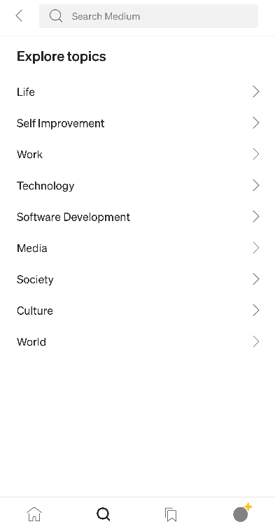
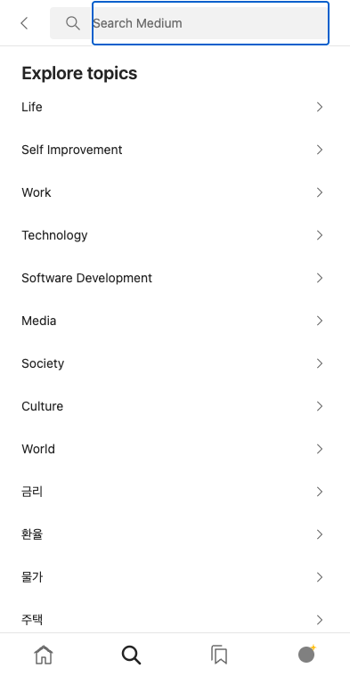
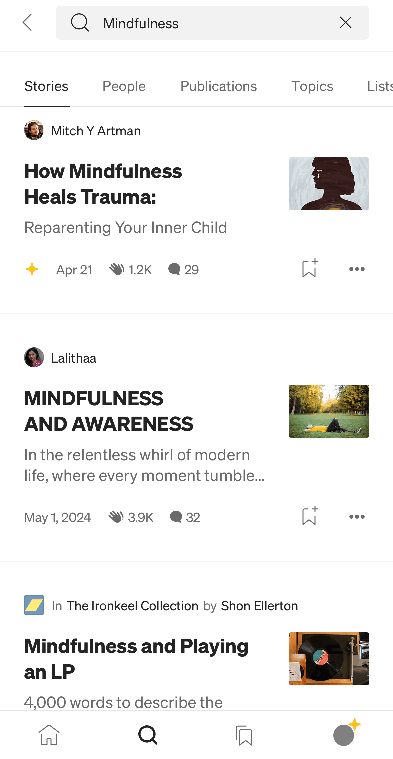
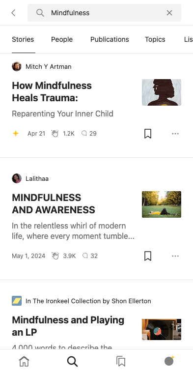

Reference: 1179×2556 normalized to393×852, OS top59/bottom34 cropped. Implementation: actual393×759 browser capture. Cropping does not establish device DPR. Staff Picks and Who to follow headings aligned to their reference scroll positions. Font, icons, inaccessible source content and mock menu behavior remain different; no100%claim.
Home / 01_sc_5e0ba0e498ff49579bf838096aec4b5e
Home / 04_sc_4ec0a8b65f954b0984ece5b3b9f258e4

Home / 03_sc_e1cf4be8210f432098943d8a233d9d72
Explore / 02_sc_1c3e4349171248378eada528f7942269


Explore/Searching Medium / 02_sc_047c91d900aa47448d61e4faacd68ad5


Explore/Searching Medium / 03_sc_8dc9eeb5f9d244ca9fa6fb7a973de82f


Explore / 04_sc_4352273aa0654f939705613dfa224e75


Explore / 05_sc_6bc604f45031400d9cebd252cd89e7a2